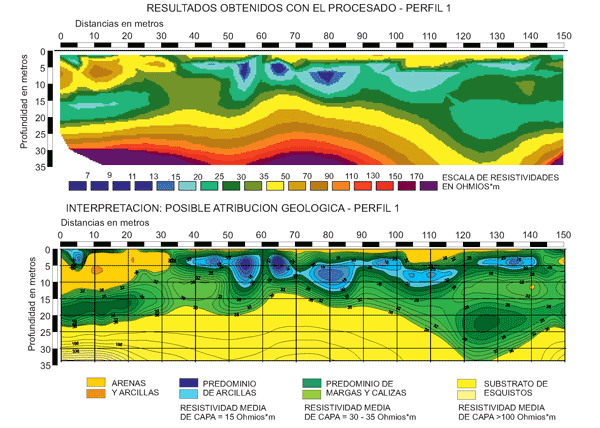
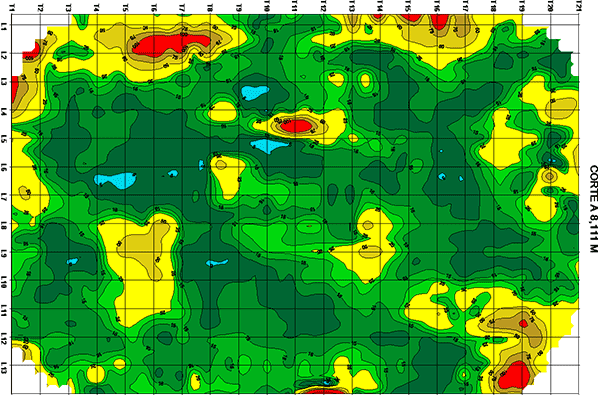
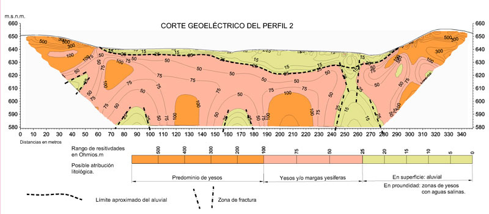

Method of electrical tomography


In short, what has come to be called Electrical Tomography is a way of performing Electric Panels in Continuous Current at various "levels" using the usual devices, ie: Wenner, Schlumberger, dipole-dipole, pole-dipole, etc. These different levels are obtained by making several passes over the same profile, with the same device and different device sizes. This effect is currently achieved with multi-electrode field acquisition systems.
If we stick to the usual devices, Wenner, Schlumberger and dipole-dipole; Schematically it would be:
- Wenner: A-n*a-M-n*a-M-n*a-B with a=uniform and n=1, 2, 4, etc
- Schlumberger: A-n*a-M-a-N-n*a-B with a=uniform and n=1, 2, 4, etc
- Dipole-dipole: A-a-B-n*a-M-a-N with a=uniform and n=1, 2, 4, etc
- Pole-dipole forward: A-n*a-M-a-N-∞ with a=uniform and n=1, 2, 4, etc. Pole-dipole Reverse: ∞-n*a-M-a-N –A’ with a=uniform and n=1, 2, 4, etc
Where A and B are current electrodes and M and N are potential electrodes. The constant a is a distance in meters (generally not more than 10 m, except for devices, and therefore, large depths of investigation). The variation of the parameter n we are defining the different levels that we are measuring, since of its value depends the size of the device and therefore the depth to which we arrive. In the pole-dipole device, the current electrode designated as ∞ means that the electrode B is located very far from the dipole MN (at least a distance equivalent to 3 times the largest size of the device and in a perpendicular sense thereto)
The depth of investigation depends on the type of device, the size of the device and the materials to be studied (size, arrangement, resistivity contrast, etc.). In general terms they are usually in the order of 40% of the maximum n *, in the Wenner and Schlumberger devices, and 30% of the maximum n * in the dipole-dipole.
Applications
Like all types of pits its usefulness is focused on the detection of lateral changes of electrical resistivity, which means the possibility of detecting dikes, faults and / or fractures (in both cases depending on its size and if there is a resistivity contrast With their environment), buried bodies, cavities (in both cases depending on their size can be detected to a depth or another), areas of intrusion of pollutants, lateral contacts between geological formations with sufficient resistivity contrast, etc.
Regarding the choice of one type of device or another, the following general rules can be followed:
- The Wenner device is the most sensitive to vertical changes
- The dipole-dipole and pole-dipole devices are the most sensitive to horizontal changes
- The Schlumberger device is a compromise between the above, goes quite well when horizontal and vertical changes are expected
A disadvantage of the dipole-dipole device is that when the spacing between the dipoles is somewhat large (medium or high depths of investigation), the signal is very weak and in many cases there is no reading since it must be started with A small a (values of δV and δI are very weak, even if state-of-the-art signal stacking equipment is used). In order to solve this problem, the value of a certain number of levels must be increased, with the consequent slowdown in the work, increase of the costs and, fundamentally, very significant increase of the external "perturbations-parasites" that make it unfeasible
This problem disappears using a pole-dipole device, but in this case the direct and inverse device must be used in order to correctly locate the detected anomalies. On the contrary it is necessary to take more measures and to extend the electrode of ∞
As regards vertical changes, that is, delimitation of pseudo-horizontal layers in terms of both their thickness and their resistivity, will only be achieved when the entire layer is within the range of depth achieved with the tomography. In order to define the depth of the ceiling and the resistivity of these "incomplete" layers, we have to resort to the support of the SEVs (in fact, the vertical changes in this sense are better defined by the SEVs). This case is illustrated in Figure 1 attached
In this figure it can be observed that the layers of sand and clays, predominance of clays and predominance of marls and limestones, are perfectly defined, but not the substrate of schists. In the final part of the section there is a gradual increase of resistivity (similar to the ascending branch of a SEV) without being able to define where the layer starts and to which resistivity it tends; In the case shown this problem has been solved with the help of SEV that it is allowed to obtain the interpreted section that is presented (in this case the results have been checked with a near mechanical probe)
Examples
Geoelectric recognition for the detection of possible cavities

Limiting the boundaries of a quarry

Delimitation of aquifers
Geoelectric recognition for a dam